How to add animated Emotes
Emotes are global Special Actions that can be applied to any avatar, and their purpose is to enable a more expressive emotional state of the avatar (e.g. to enhance an angry expression we suggest using the fire emote, Flaming Mad). Emotes are triggered through keybinds that can be set in the Animaze app.
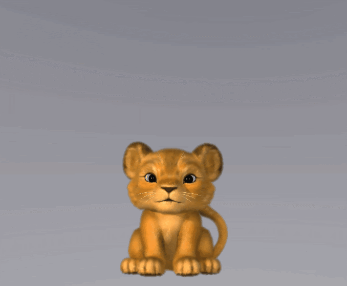
An Emote is a container item that can include any other Animaze item such as: Particle Systems (our core use so far), Lights (still only 4 will be applied on the avatar), 3D Props and sounds.
When triggered, an emote will be temporarily attached to the avatar, with options to follow or not the avatar movement and options to select specific skeletal joints to attach to.
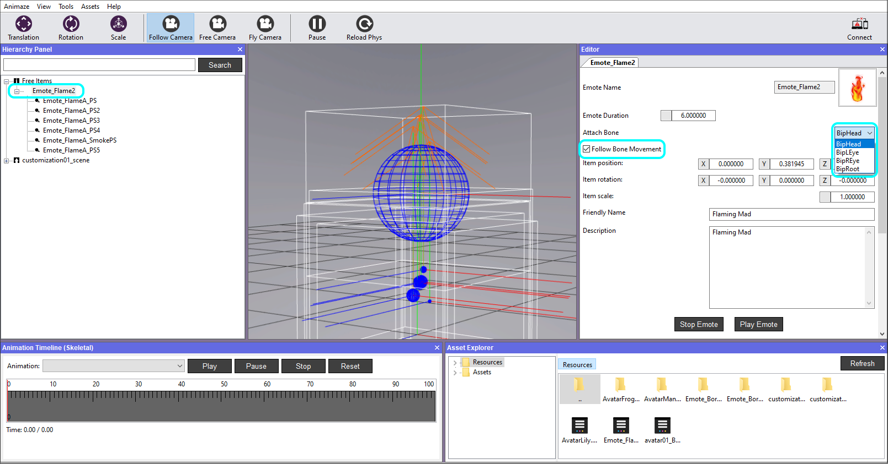
An emote can be customized and configured using the following options:
1. Attach Particle Systems, Lights, 3D Props and/or Sounds items through the Editor's Hierarchy Panel
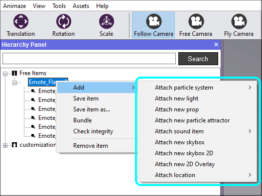
2. Duration of each attached component/item of the emote
3. The lifetime of an emote
4. Attached to a certain skeletal joint
5. Follow the avatar movement or not
Let’s create a fire emote, which will include a few Particle Systems:
1. Create a texture atlas (.png format) – an image containing multiple smaller images of the same item. The easiest way to make a texture atlas is to use Timeline in Photoshop and make frame by frame drawing. We used a 6x6 tiles image:
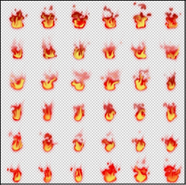
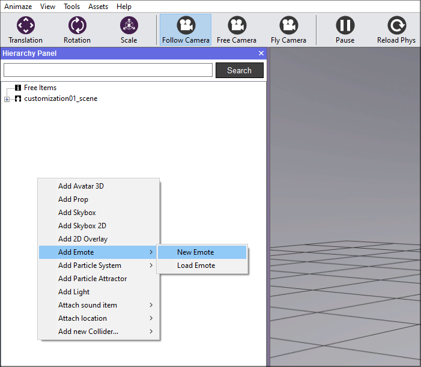
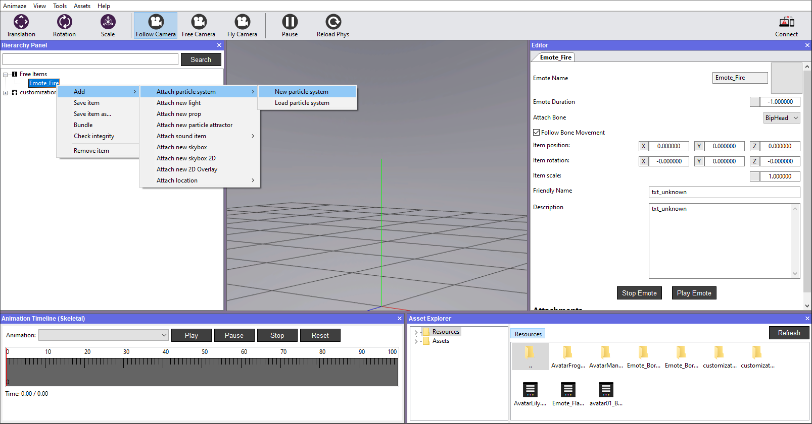
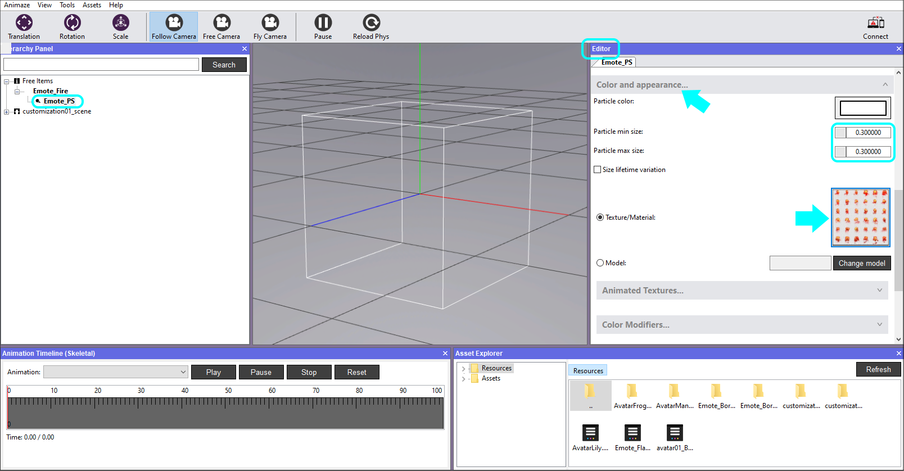
5. Expand the Animated Textures tab, tick Use Animated Texture, set the tile numbers for Width & Height, tick Use Smooth Frame Blending and adjust the FPS, if needed.
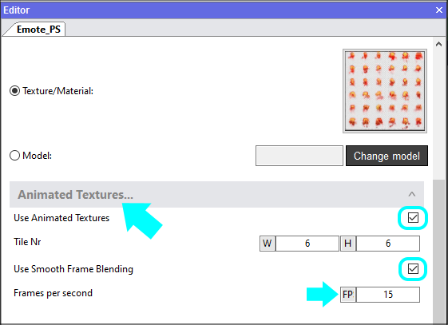
6. In the Generation and Lifetime tab:
a. set the emitter type. We used Point in our fire example.
b. set particles generated per second to 1
c. set Particle lifetime. We set it to 3
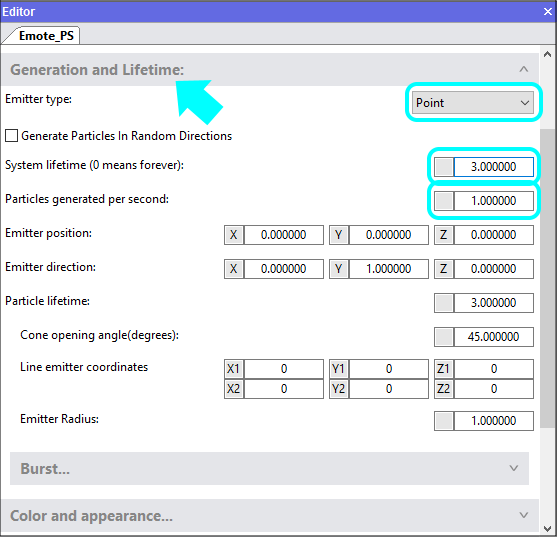
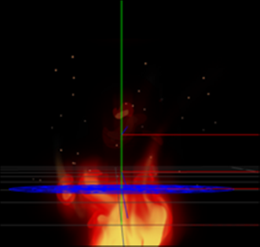
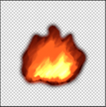
8. Tick the Size lifetime variation and set the size values.
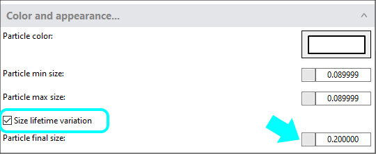
The emitter type for this one is set to Circle. Adjust the scale and position as desired. The maximum number of particles is 20, while the particles generated per second is 10, adjust these values as desired for your use case.
Good luck! This is an amazing feature!